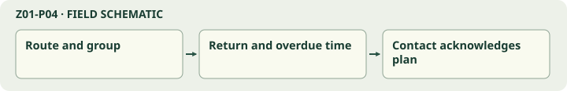

Z01-P04 · Survival fundamentals
Leave a usable trip plan
Give a trusted person enough information to help responders if you are overdue.
When it applies · A trip outside dependable cell service, especially an unfamiliar trail.
Equipment · Paper plan or saved message, mapped route, and contact information.

Actions
- Record the starting point, planned route and return time. Include names or party size and expected vehicle location if relevant.[E01, T06, ED]
- Give the plan to a trusted contact and agree on the overdue reporting point and what information to pass to responders.[E01, T06, ED]
- Carry a copy and notify the contact of significant changes when you can. Check back in at return.[E01, ED]
Verify · Your contact can identify the trailhead and say when they should act.[ED]
Stop or change course · If nobody can act on an overdue report, reconsider the route and exposure before departing.[ED]
Evidence and editorial notes
- E01 · Minnesota DNR · Safety in State Forests
- Before your trip and while visiting · state-forest travel
Know the route, check conditions, carry navigation and safety equipment and share trip details.
Primary source · checked 2026-11-24 - T06 · NPS · Outdoor Emergency Plan
- If you get lost or hurt; call for help · Outdoor US emergency
Communicate location, last known point, situation and needs. Stay put when unable to establish a safe route unless immediate danger requires movement.
Primary source · checked 2026-11-24
Source lineage · B014 reconstruction R01 and B012 P02.